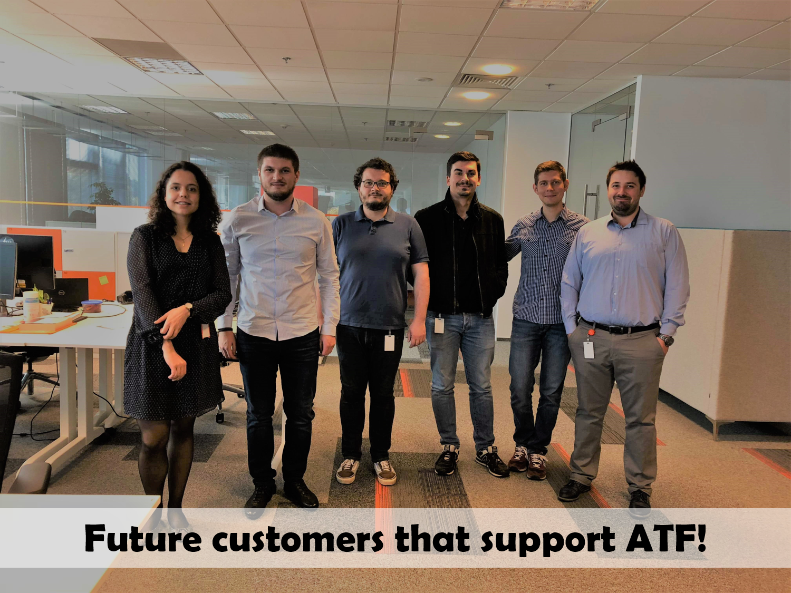

1. How you identified the problem?
- Current solutions, while offering lots of features, also introduce a lot of overhead and complicated configurations. Much needed features like the ones proposed are never aggregated into one application(code versioning, cloud storage etc.). Graphical user interfaces are ambiguous due to the need of providing access to every feature;
2. What you thought is a solution for the problem?
- An open-source application model, offering as much extensibility as possible and a freemium-based revenue (from plugins and cloud storage space) with the possibility of donations.
- The solution has to address the main problems: stick to the most necessary features, maintain a simple interface with great performance, offer plugins for special features.
3. Your plan for customer discovery (short overview before going into detail).
- There are two types of potential customers:
- those who DO
- those who DON’T use automated testing frameworks (but have the need to)
- Explain our proposed solutions to both types of customers and gather feedback. For customers who already use an automated testing framework, see which ones are willing to migrate from an existing platform and learn why others won’t (what the reasons are, what features they’re not willing to give up on etc.)
4. Describe the process in detail:
4.1 How you identified your customer segment/s?
- The main customers will be the big companies that develop web applications because they spend a lot of time for testing. Any modification to an application requires a complete regression testing of the entire application to see if any other sections of the applications have been affected.
- At the same time, this testing process should be done as quickly as possible to make changes in production to repair some bugs or to bring new features. The solution for these companies would be to automate this process by writing automated tests and running them quickly on an infrastructure that our application will provide.
4.2 How you reached them, how you collected information from them? Include the questions that you asked and all of your findings.
- To interact with potential clients we decided to be in contact with companies interested in this topic, so we looked after representatives of the participating companies but also partners of the “ROMANIAN TESTING CONFERENCE” - Romania_Testing_Conference, which takes place annually in Cluj, last year. We saw that our idea represents an interest for certain categories on the current market!
- Using Google Forms, we have created an online survey (with 9 questions) that was distributed to developers/testers within interested companies: Survey_Automated_Testing_Framework. The questionnaire was completed by 27 people, 90% of them being part of the IT industry and using testing in day-to-day work.
- The survey included the following questions:
### 1. Do you, or your current team, possess enough technical skills to build and maintain test automation?
• Yes (63%)
• Partially (25.9%)
• No (11.1%)

Conclusion: 63% responded that they have enough technical skills to build and maintain test automation. We think this is a good result for us because now we know that the majority of teams are using automated testing and we can propose them a solution to optimize and to reduce the time needed to maintain the testing process. Even if they concluded that they posses enough technical skills to be able to build and maintan test automation, we can’t be sure of that. Three levels of skills are required:
- Organizing and creating GOOD + MEANINGFUL + EFFECTIVE tests
- Running and maintaining test suites created (knowledge of the automation tool)
- Automating the tests in the automation tool (knowledge of the tool and the language used in authoring the tests in that tool)
### 2. How do you run the automated tests:
• In an application developed in-house (25.9%)
• In a commercial application (25.9%)
• Locally on your PC / Laptop (29.9%)
• Otherwise (18.5%)

Conclusion: 25.9% use in-house developed application, respectively theirs PC / Laptop and don’t use commercial applications. We can conclude that current applications available on market aren’t good enough or are too expensive. If our product will offer great features and will be available for an attractive price, we can motivate this category of developers to use our solution.
### 3. How often do you run automated tests:
• Daily (48.1%)
• Several times a week (14.8%)
• Several times a month (37%)

Conclusion: We can see that developers run tests often and a framework can greatly reduce the time for teams that are spending on testing and increase overall productivity.
### 4. What types of tests you run (multiple responses):
• Api (51.9%)
• Smoke (25.9%)
• Acceptance (37%)
• Others (59.3%)

Conclusion: Our product will cover the most popular types of tests including API, Smoke and Acceptance tests and will be useful for most developers.
### 5. HOW do you prefer to create tests and WHY?
• Clicking in the interface (no programming skills required) (14.8%)
• Writing Code (better structure of tests, component reuse, creation of own logic, ...) (85.2%)

Conclusion: Our solution will require writing code for creating tests and as we can see from the survey, this is the preferred method for developers to create tests.
### 6. In which language do you prefer to write tests:
• Java (63%)
• Javascript (0%)
• Python (22.2%)
• PHP (0%)
• Other (14.8%)

Conclusion: In the first instance, we planned to use PHP language for writing tests, but after we have seen the survey results, we are seriously considering to add a new feature that will offer the possibility to select a language from several available to write tests including Java, Javascript and Python.
### 7. How useful do you consider the following features for you (with Useless, Useful, Very useful):
• Running tests in serial/parallel
○ Useless (2 persons), Useful (7 persons), Very useful (18 persons)
• Running defined tests via API
○ Useless (1 person), Useful (14 persons), Very useful (12 persons)
• Running testing plans on Schedule
○ Useless (3 persons), Useful (12 persons), Very useful (12 persons)
• Running tests on different operating systems
○ Useless (5 persons), Useful (10 persons), Very useful (12 persons)
• Running tests on different browsers
○ Useless (4 persons), Useful (15 persons), Very useful (8 persons)
• Running tests on different versions of browsers
○ Useless (7 persons), Useful (11 persons), Very useful (9 persons)

Conclusion: As we can see, the developers consider the most of our features useful or very useful. This survey will help us prioritize some features and deliver them from the very beginning.
### 8. What is the one main benefit of test automation you expect to gain?
• More confidence in the released product (18.5%)
• Higher product quality (33.3%)
• Faster releases/meeting the schedule (22.2%)
• More interesting job/skill than manual testing (3.7%)
• Creating and automating tests helps everyone better understand the system under test (7.4%)
• Show system consistency (3.7%)
• Customers finding less bugs (3.7%)
• Less support issues (3.7%)
• Finding more bugs (3.7%)
• None/no benefit (3.7%)

Conclusion: As we thought, people expect from a testing framework to reduce the time needed for creating and running tests and to increase the overall product quality by increasing the code coverage. We’ll try to optimize our product to be as simple and efficient as possible for creating tests and we’ll offer features as scalability and parallel testing to reduce the testing time.
### What feature would you prefer implemented by default ? (considering some performance impact)
Answers:
• It would be nice for an ATF to have a feature that tells you the code coverage for each test.
• Multitasking used for isolated parallel testing.
• .
• Mobile view test
• Running testing plans on Schedule
• Have the ability to navigate easily between tests, run multiple tests in parallel.
• Email notification
• Intuitive API interface
• Clear overview of the tests and results and charys
• None
• Possible hints to how certain bugs can be fixed (e.g. how Microsoft Excel gives clues to how to fix what it detects to be a wrong formula).
• Mocking
• context setup/destruction from code for each test
• Dont understand the questiin
• Run the tests in parallel.
• N/A
• Performance tracking/management
• Don’t understand the question
• Be able to see the stacks of records and be able to play back test cases
• Less human interaction
• Scalability
• Running parallel tests
• paralelismul
• ALL OF THEM
• Coverage
• Paralel tests
• Various smart templates.
- Conclusions:
- From the results obtained through this survey we realized that those interested in automated testing, runs tests locally on theirs PCs, so they could become potential users of our application. People who have an in-house framework will also choose our product.
- At the same time we found out that 48.1% do not run the tests every day, so they don’t use their infrastructure to the maximum of potential and could reduce costs by running tests in our application on-demand. We also determined that most of users prefer to write tests as code and the most used languages that our application should support. We also have the list of the most useful and wanted functionalities so we know how to prioritize them for a MVP.
- What people wanted from us? Higher confidence, increased quality, faster releases & System consistency from release to release (regression suites)
5. Describe how these insights have affected your product (if in any way).
- Complaints about performance on existing products made us decide that special features have to be offered as plugins, instead of being included in the base product, so that the end product would be simple, fast and limited to basic needs, but also feature-filled if necessary. Customers not already using such a framework also wished for fast and simple way to test their applications, without unnecessary complications.
6. Do you consider that you are ready to move to the Customer Validation stage (to test selling)? Provide arguments.
- Considering that we’ve covered all complaints about other existing solutions regarding Automated Testing Frameworks and that most customers are happy with our other proposals, we’re ready to move on to the next stage!!!
Our happy customers:
